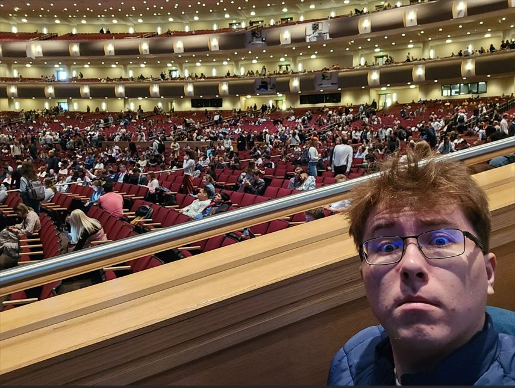

Hello! I'm Kyle Rosengren, sorry you have to view this
Howdy howdy! This is my first full sesmester here at BYU-I. I did take some classses during the Summer Session tho.
I know it's not terribly unique for a Computer Science Major, but when I have free time I play Video Games. SHOCKING. I also love reading The Book of Mormon and reading about it as well.
Big fan of BoM scholarship
It's been about 2 years since I've worked on anything Comp Sci related, I'm hoping that taking this course refreshes my memory a bit. So far it's been working!
I've been a member of the church for 12 going on 13 years, and I served my Mission in Texas, San Antonio. Ether 12:26-27 is my favorite scripture right now! (Subject to change)
